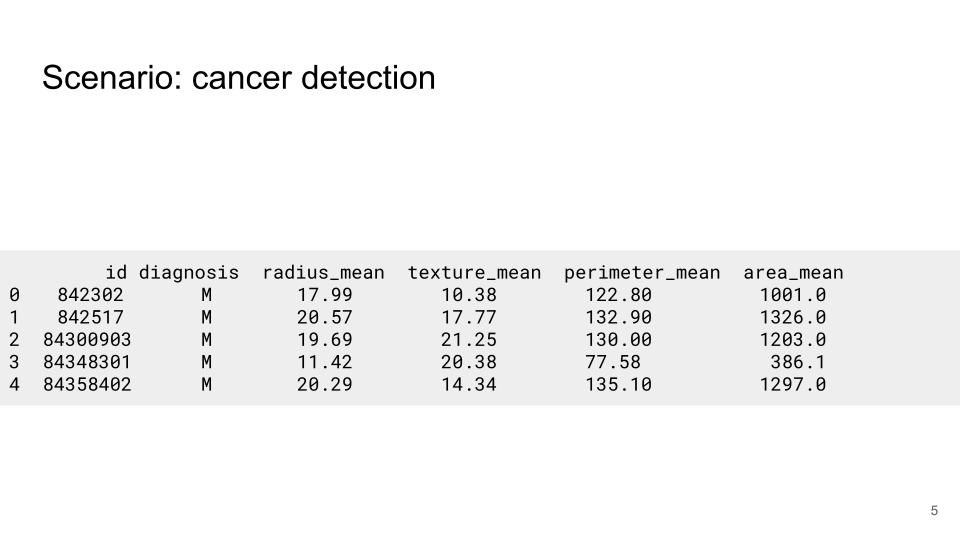
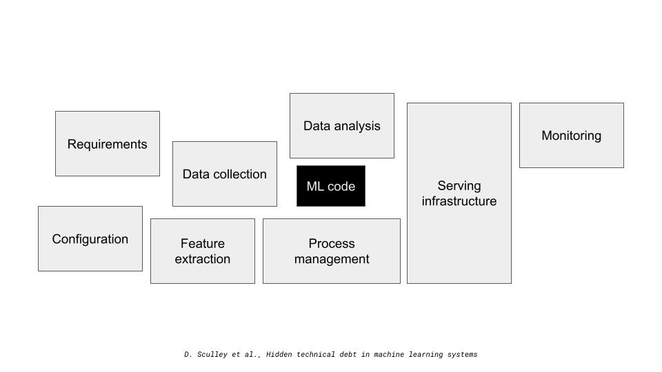
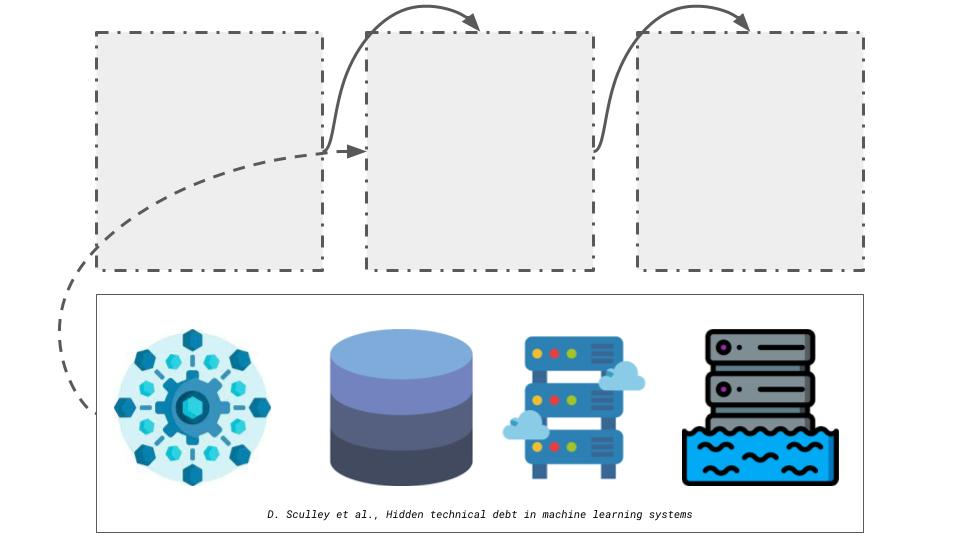
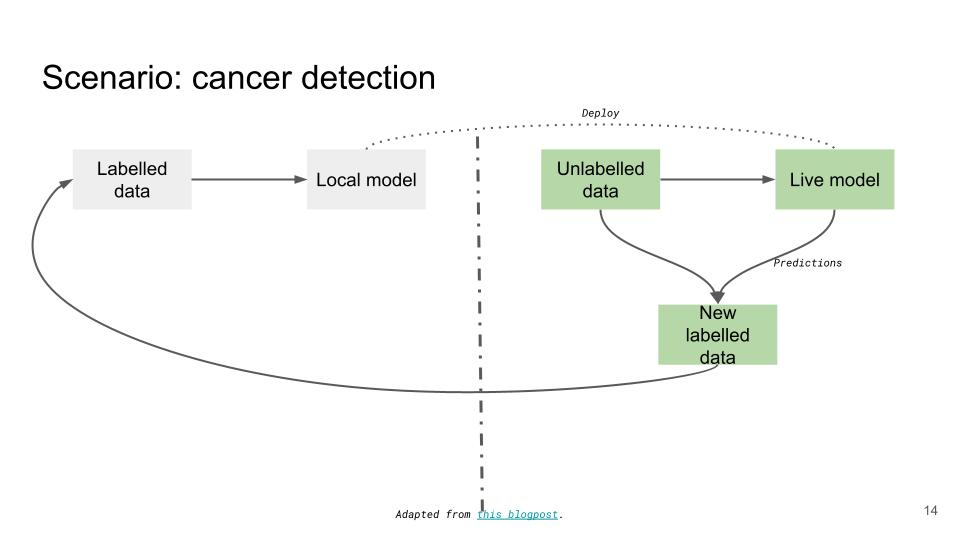
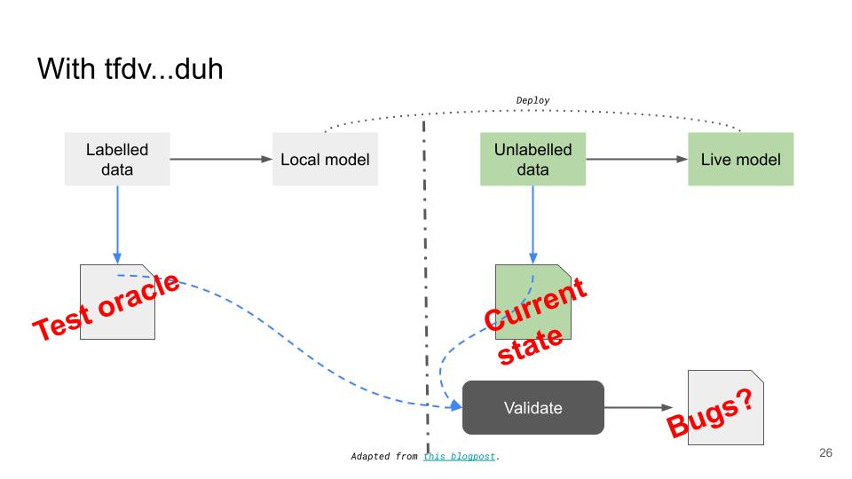

Data Validation with TFDV
2022-05-16
Note
I gave this guest lecture once again in the 2023 iteration of the REMLA course.
In this lecture we will go over the basics of data validation. The first half of this lecture will be a talk on the fundamentals of data validation. We will answer what is data validation?, why should we validate our data? and how we can validate our data?. The second half of the lecture will be a hands-on tutorial on using Tensorflow Data Validation, instructions & code for which can be found on this github repo.
What is data validation?
I like to think of data validation in terms of expectations vs. reality. When working with data, we tend to have many implicit expectations from our data and data validation allows us to make such expectations explicit but defining validation rules.
Another (perhaps more technical) perspective would be that data validation is equivalent to data testing. This may include testing for presence of data, the data type of the columns (int, float or string) and statistical tests pertaining to the distribution of the feature.
Why should we validate our data?
Lets answer this question with an example. Lets assume we are working on a project which involves working with the tabular data below. The dataset contains several numerical features such as the area & perimeter of the tumour and we want to train a model to predict whether the tumour is malignant or benign.

And lets say—being the ML experts that we are—we do some experimentation with various models and we manage to find one that fits the data well. We evaluate the model with a test set and achieve an acceptable value for the metric we are checking (accuracy, precision, recall or something else). Everybody is happy, you give yourself a pat on the back for a job well done, and call it a day.
This is a typical ML workflow which we tend to see in academia or in an educational setting. Turns out however, that the ML model related work is a single component of a much larger system, as seen in the figure below.

Continuing along with the theme of data, lets dive deeper into the data collection stage. There may be several sources of data for the model. For instance, there may be a web service which is continually scrapping the internet for data, or we may have data stored in a database, a data warehouse or data lake.
In addition, we may have several systems with or without ML components which our system communicates with. For instance, in the figure below, our system may rely on data from another service. In return, other services may depend on the predictions from our system.

My point here is that ML pipelines are inherently complex and tangled. They consist of several stages and the ML model work tends to be a small part of a much larger system. A small change or bug in any of the stages ripples throughout the entire pipeline. Therefore, we cannot make implicit assumptions regarding the quality of the data.
Continuing with the scenario of cancer detection, lets say that we have now managed to deploy our ML model in production. After a certain period of time (days, weeks or months) we may decide to re-train the model due to degrade in performance (perhaps the accuracy is lower than it used to be). The next batch of training data is typically generated by combining the unlabelled data in production with the predictions our live model is making, as seen in the figure below.

However, what happens if we no longer track the area_mean feature? Or what if we start tracking the numerical features in centimetres rather than millimetres? Or what if we use comma instead of periods to denote decimals?
With the exception of the last example, changes are that our pipeline continues to work albeit with a degraded performance. This is because we hold several implicit expectations from our data based on the training data which was used however the data in production may tell a completely different story. Thus it is important to make such expectations explicit by validating our data and catch data quality issues from feedback loops.
How should we validate our data?
Although data validation has existing in the domain of database management systems for a very long time, its application in ML is new and still evolving. In this part of the talk I will present the theoretical principles on which tfdv operates.
We first generate a schema from the training data. A schema defines what we want our data to look like. For instance, for our cancer dataset, the schema may specify the columns we expect in the dataset, their data types and the distribution of each feature. Next, we gather statistics from the dataset we want to validate (this can be the local test set or the live data from production). Finally, we compare the statistics against the schema to make sure that they match. The figure below puts a software engineering lens on how data validation works. The schema can be thought of as the test oracle and the live data is the current state. And we validate the two to ensure that there are no bugs in the live dataset.
It is important to realise that the schema generated by tfdv is best effort and the ML practitioner is still required to tweak the schema based on their understanding of the data & domain expertise.
